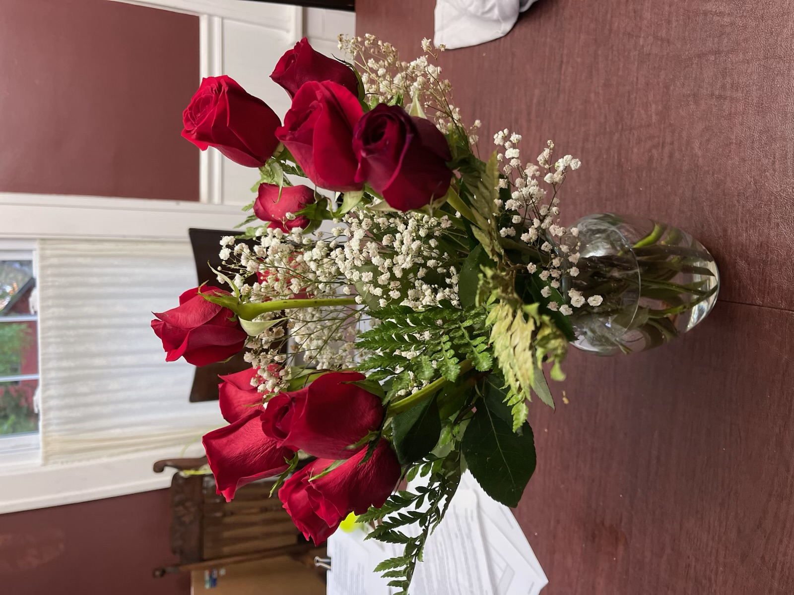
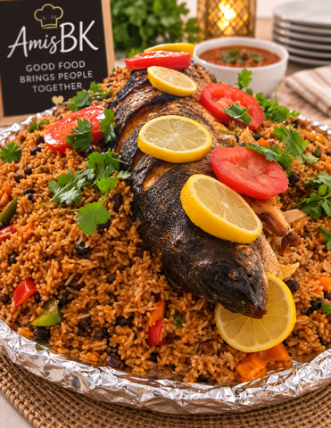
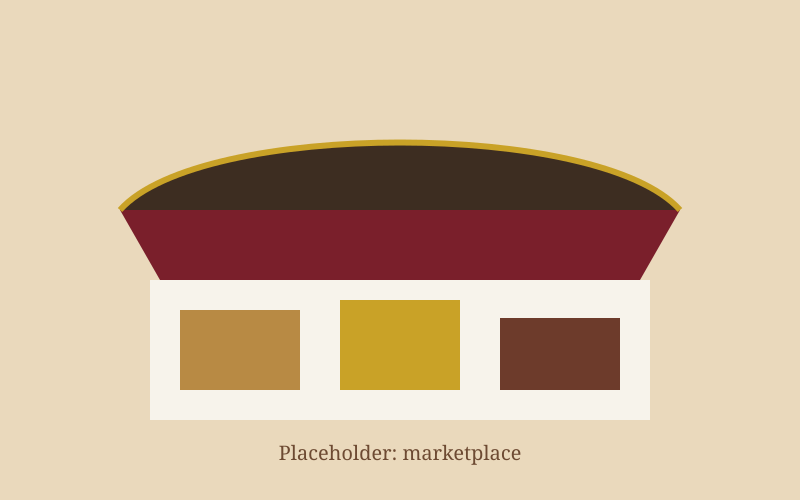
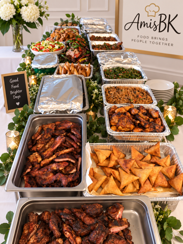
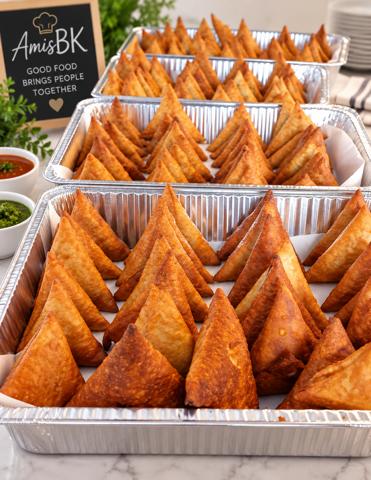
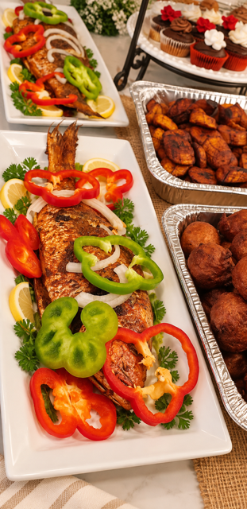
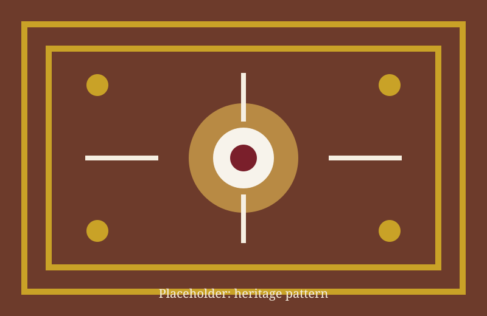

Flowers & Gifts
Elegant bouquets, teddy bears, gift bags, and custom celebration packages for love, gratitude, and remembrance.
West Michigan
Celebrating Culture. Celebrating Community. Celebrating Life.
Flowers • Gifts • Afro-Centric Catering • International Marketplace

Our story
Amis BK LLC was founded on faith, perseverance, family, and the belief that every celebration deserves beauty, warmth, and hospitality. Inspired by African heritage and serving the diverse communities of West Michigan, we create meaningful experiences through flowers, thoughtful gifts, authentic cuisine, and exceptional service.
What we offer
From a single bouquet to a full celebration table, Amis BK helps West Michigan families mark life’s important moments.
Elegant bouquets, teddy bears, gift bags, and custom celebration packages for love, gratitude, and remembrance.

Authentic Congolese-inspired cuisine prepared for weddings, graduations, birthdays, churches, and corporate events.

Curated artisan goods, accessories, and specialty products celebrating craftsmanship from around the world.

Serving families, churches, businesses, and organizations across Grand Rapids, Muskegon, Kalamazoo, and West Michigan.


Heritage
Our African heritage inspires our hospitality, generosity, and appreciation for gathering around food, family, and celebration. We proudly welcome and serve people of every background throughout West Michigan.

Questions
Amis BK LLC offers flowers and gifts, Afro-centric catering, an international marketplace, and hospitality for community celebrations across West Michigan.
Yes. We serve Grand Rapids, Muskegon, Kalamazoo, and the wider West Michigan community.
Our catering is Congolese-inspired and prepared for weddings, graduations, birthdays, churches, and corporate events.
Email info@amisbk.com with your event details, or use the Request a Quote or Start Your Order buttons on this page.
Yes. We prepare elegant bouquets, teddy bears, gift bags, and custom celebration packages.
Contact
Tell us about your wedding, church gathering, graduation, birthday, or community event. We will help you plan flowers, gifts, catering, or marketplace selections.
Email: info@amisbk.com
Phone: (616) XXX-XXXX